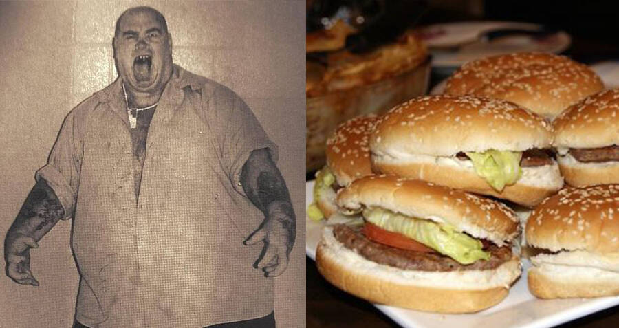
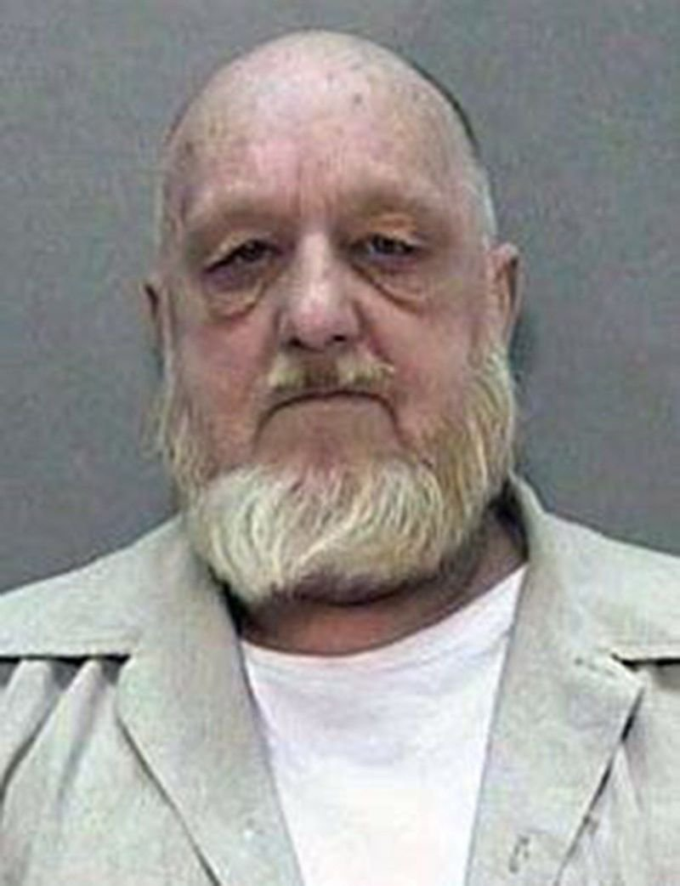

Biografía
Desde siempre había sido descuidado cuando era niño, su padre era un alcohólico que murió en un accidente automovilístico cuando Metheny tenía seis años y su madre había descuidado a sus seis hijos mientras trabajaba en turnos dobles fuera de la casa.
Metheny dijo que sus padres a menudo lo enviaban a vivir con otras familias en arreglos
"similares a los de un hogar de crianza". Metheny afirmó falsamente que su madre estaba muerta. Su madre dijo que eran algo pobres y que tenía que trabajar duro como camarera y conductora de camiones de comida, pero les había dado a sus hijos una vida familiar normal, y los niños nunca habían pasado hambre ni habían sido ingresados en hogares de otras familias como Metheny había afirmado. Ella dijo que Metheny era una estudiante por encima de la media, siempre educada y no mezquina cuando era niña. Ella dijo que
"él era inteligente y tuvo una buena infancia. Si lo descuidaron, fue su culpa. Era una casa bastante buena".
Metheny se unió al ejército de los Estados Unidos cuando cumplió 18 años en 1973. Su madre dijo que había servido en Alemania, aunque afirmó que había cumplido una gira en Vietnam y se había vuelto adicto a la heroína mientras estaba en una unidad de artillería allí. Su madre dijo que no tenía ningún recuerdo de él sirviendo en Vietnam, y las circunstancias de su servicio fueron reportadas como no verificadas en informes de prensa.
La participación estadounidense en Vietnam había terminado en ese momento. Metheny rara vez se comunicaba con su madre después de que se unió al ejército. Ella dijo:
"Él seguía alejándose cada vez más. Creo que lo peor que le ha pasado fueron las drogas. Es una historia triste, triste".

Asesinatos
Lo apodaban el hamburguesero, aunque también solían llamarlo el asesino caníbal. Y ambos sobrenombres pueden utilizarse para describir a este hombre y su escalofriante historia.
Se acercaba a personas desamparadas, mayormente con problemas de drogadicción, y aprovechaba su vulnerabilidad para secuestrarlas, matarlas para luego desmembrar sus cuerpos.
En alguna ocasión comió de esa carne, como si se tratase de cualquier otro animal. Y luego puso un puesto de comida para vender las hamburguesas que hacía con los restos de sus víctimas. Aparentemente todo comenzó luego de una ruptura amorosa
Irónicamente, Metheny era conocido como
"Tiny" en la década de 1990, ya que medía 6′1 ″ de alto, era de complexión grande y tenía sobrepeso. Había estado pasando tiempo en bares, viviendo con bandas de hombres sin hogar en campamentos improvisados en el sur de Baltimore y gastando casi todo su dinero en crack, heroína y licor. Sin embargo, mantuvo un trabajo estable como conductor de montacargas y fue descrito universalmente como inteligente, bien hablado y muy educado.
Metheny asesinó a Cathy Ann Magaziner en 1994, una mujer de 39 años que había sido condenada por prostitución, y enterró su cuerpo en una fosa poco profunda en el lugar de la fábrica donde trabajaba. El cuerpo permaneció allí durante más de dos años. Más tarde dijo que la había estrangulado y que desenterró su esqueleto seis meses después, metió su cabeza en una caja y la tiró a la basura.
Metheny fue juzgado por asesinato en un caso diferente en 1995 por presuntamente matar a Randall Brewer y Randy Piker con un hacha en un campamento de "ciudad de tiendas" para personas sin hogar debajo del puente de la calle Hanover de Baltimore. Hubo disputas que involucraron a grupos rivales de vagabundos, y Larry Amos robó el arma homicida y la utilizó para matar a Everett Dowell, otro vagabundo.
Los cuerpos fueron descubiertos el 2 de agosto de 1995, el mismo día en que Dowell fue asesinado. Amos fue arrestado y acusado de asesinato en primer grado y se declaró culpable del cargo menor de homicidio; fue puesto en libertad tras cumplir un año y nueve meses de una condena de ocho años. Un jurado concluyó en julio de 1996 que no había pruebas suficientes para condenar a Metheny por el asesinato de Brewer y Piker, pero luego dijo que era culpable de esos asesinatos.
Metheny mató a Kathy Spicer a mediados de noviembre de 1996 apuñalándola con un cuchillo. Secuestró a Rita Kemper el 8 de diciembre de 1996 e intentó violarla. Según los fiscales, compartió drogas con Kemper en el remolque donde vivía en el sitio de la fábrica de paletas. Ella se negó a tener relaciones sexuales con él y salió corriendo del remolque, por lo que él la persiguió, la golpeó, la arrastró de regreso al remolque y luego le bajó los pantalones e intentó violarla. Kemper dijo que había intentado asesinarla, diciendo:
"Te voy a matar y a enterrarte en el bosque con las otras chicas". Ella escapó por una ventana del remolque y huyó a los oficiales de policía en el área. Luego, Metheny le pidió a un amigo que lo ayudara a enterrar el cuerpo de Spicer que había estado escondiendo en el sitio de la fábrica desde que la mató un mes antes.
La amiga denunció a la policía el 15 de diciembre de 1996, y Metheny fue detenido y acusada de su asesinato ese mismo día. El dueño del negocio fue detenido con Metheny cuando salían de una fiesta de Navidad y fue acusado como cómplice después del hecho por presuntamente disponer de pruebas. Metheny comenzó a confesar otros asesinatos, así como el de Spicer. Condujo a la policía a la tumba poco profunda donde había vuelto a enterrar los restos decapitados de Magaziner. Gran parte del cráneo faltaba, pero la policía pudo identificar a Magaziner a partir de los registros dentales. La policía dijo que había elegido a jóvenes trabajadoras sexuales blancas que eran adictas a la heroína y la cocaína.
Los asesinatos también involucraron brutales agresiones sexuales. Fue acusado de matar a Toni Lynn Ingrassia, de 28 años, pero esos cargos fueron retirados más tarde por falta de pruebas. Afirmó haber matado también a otras tres prostitutas a lo largo de Washington Boulevard en Baltimore, aunque no había pruebas de la mayoría de esos delitos aparte de su confesión. Dijo que había arrojado cadáveres al río Patapsco y que nunca fueron encontrados. El periódico Baltimore Sun informó en 1997 que no estaba claro cuán veraces eran sus afirmaciones sobre la cantidad de personas que había matado, aunque dijo que había matado hasta 10 personas. Su abogado dijo que estaba arrepentido y que las drogas y el alcohol habían cambiado su personalidad y lo habían vuelto violento.
“Corté la carne y la puse en unos táper en el congelador. Abrí un pequeño puesto de carne a cielo abierto. Comí auténticos sándwiches de roast beef y cerdo. Ellos eran muy buenos. El sabor del cuerpo humano era muy similar al del cerdo. Si se mezclan, nadie puede notar la diferencia”, afirmó Metheny en su juicio. Un auténtico caníbal.
Denuncia y confesión
Joe Metheny confesó varios crímenes y muchos no pudieron ser probados por la Justicia. Pero fue condenado a doble perpetua por los homicidios de Cathy Ann Magaziner y Kathy Spicer. En principio, su destino era la pena de muerte, aunque luego esa decisión fue revocada.
Metheny también fue juzgado por los asesinatos de Randall Brewer y Randy Piker, las personas sin hogar que confesó asesinar en 1995, pero no encontraron pruebas para condenarlo. Por su parte, la Policía afirmó que Joe había elegido a jóvenes trabajadoras sexuales blancas adictas a la heroína y la cocaína como sus principales víctimas.
En su juicio, Joe Metheny dejó en claro que no se arrepintió de sus crímenes:
“Las palabras 'lo siento' nunca saldrán, porque serían una mentira. Estoy más que dispuesto a dar mi vida por lo que he hecho, para que Dios me juzgue y me mande al infierno por la eternidad. Simplemente lo disfruté", dijo.
Joseph Roy Metheny falleció el 5 de agosto de 2017 luego de 20 años de encierro. Fue encontrado sin vida en su celda de la Institución Correccional Occidental de Cumberland, Maryland, Estados Unidos. Tenía 62 años y nada de culpa por las atrocidades cometidas.
Muerte
Tras haber pasado más de 20 años en la cárcel, Joseph Roy Metheny ha sido encontrado muerto en la Western Correctional Institution in Cumberland, Maryland, a los 62 años por causas aún desconocidas.
Metheny estaba pagando dos condenas perpetuas por el asesinato de dos mujeres, Cathy Magaziner y Kimberly Spicer, a mediados de los años 90, ya que no fue condenado por los demás asesinatos por falta de pruebas.
